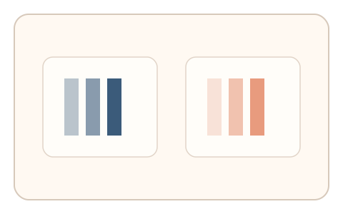
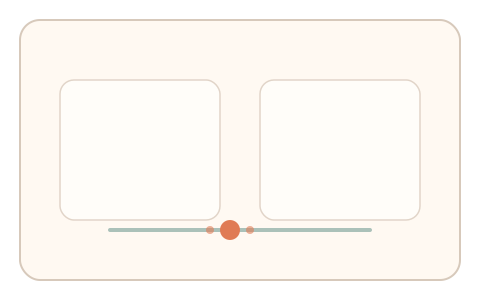
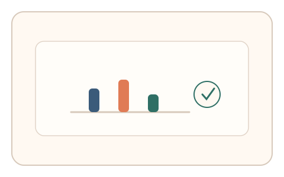

#121
D：单底座 × 单信号 × 自适应/短序列（视觉时域）
已扩展
双频融合对比
两个区域以不同频率闪烁，用户调节到“都不再闪烁”，记录临界频率差并做相对比较。
概念原文
两个区域以不同频率闪烁，用户调节到“两个都不再闪烁”的状态，系统记录两区临界频率差并做任务内相对比较。
使用“融合阈值差异”而非绝对阈值，降低伪造空间。
研究背景
临界闪烁融合频率存在个体差异，但两区域的阈值差异更稳定。以融合阈值差异作为信号可降低绝对阈值被仿真的风险。
核心机制
- 两个区域以不同频率闪烁。
- 用户调节频率到“都不再闪烁”。
- 记录两区临界频率与差值。
- 进行任务内相对比较判定。
用户流程
- 步骤 1：用户看到双区域闪烁。
- 步骤 2：调节到两区都不再闪烁。
- 步骤 3：系统比较阈值差并判定。
判定信号
两区融合阈值差
差值相对稳定，难以被固定阈值伪造。
调节过程与回弹
真实用户通常会出现微调与回弹。
判定逻辑
阈值差需落在人类分布区间且存在自然微调；过度一致或无回弹判异常。
对抗面
- 脚本直接选择固定阈值差
- 重放真实用户的调节轨迹
防御与缓解
- 随机化初始频率与区域位置
- 加入轻微亮度扰动降低模板化
- 叠加停顿与反应时信号
可达性与风险
提供更慢频率范围与替代任务，避免对光敏用户造成不适。
- 屏幕刷新率限制阈值精度
- 光敏用户可能触发不适
可视化状态

状态 1：双频闪烁
两个区域不同频率闪烁。

状态 2：阈值调节
调节至两区都不再闪烁。

状态 3：差值判定
比较融合阈值差异。
参考资料
Flicker fusion threshold
说明临界闪烁融合频率。
Temporal resolution
说明视觉系统的时间分辨能力。